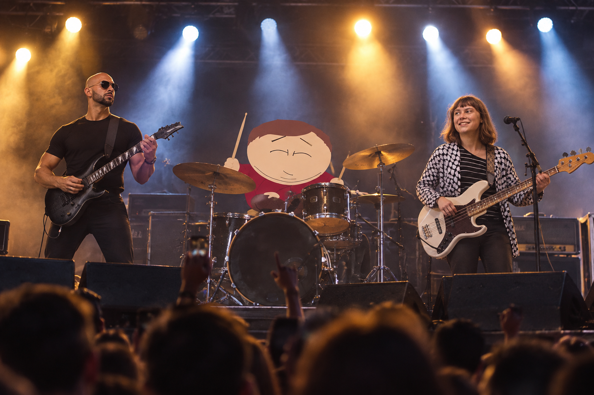

Stars of Heaven - Världens största band
Stars of Heaven är ett hårdrocksband som både skakar om och överraskar. Bandet består av Andrew Tate, Greta Thunberg och Eric Cartman, vilket förmodligen är den sista kombinationen någon hade förväntat sig att se på en scen tillsammans. På något sätt fungerar det ändå. Deras musik går från helt vanliga låtar till saker som inte alls verkar ha någon mening.
Stars of Heaven är mest känd för sin hårdrock, men vandrar även ut till andra genrer.

Stars of Heaven startade i Nakhchivan City i Azerbajdzjan, där Andrew Tate, Greta Thunberg och Eric Cartman träffades utanför en kebabbutik och spelade in en låt med en gammal karaokemaskin. De laddade upp den som ett skämt, men på något sätt blev den viral.
Deras första album, Stars of Heaven, blev en enorm succé, följt av det ännu märkligare Stars of Heaven II. Sedan kom Gamla Norrvägen, som gjorde dem till världens största band.
Ingen vet riktigt hur de lyckades, men på något sätt fungerade det.